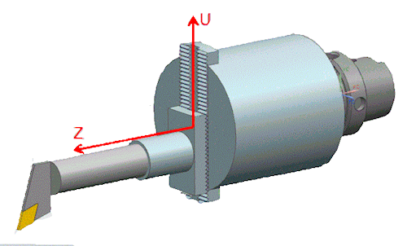

Variable work plane for turning tools
What is it?
To accommodate contouring heads, you can now create one or more operations that use an arbitrary work plane, by setting the MCS Spindle Group list to the Operation option in the tool dialog box.
A typical contouring head supported by the new Operation option has an NC-controlled X-axis. The spinning head moves along the Z-axis to cut a stationary workpiece. You can position the workpiece or the head to an arbitrary position before cutting starts. The cutting plane (also called lathe work plane) is defined with the MCS of the operation.

Where do I find it?
|
Application |
Manufacturing |
|
Prerequisite |
You must be creating or editing a turning tool. |
|
Toolbar |
Insert→Create Tool |
|
Menu |
Insert→Tool |
|
Location in dialog box |
More tab→Work Coordinate System group→MCS Spindle Group list →Operation |